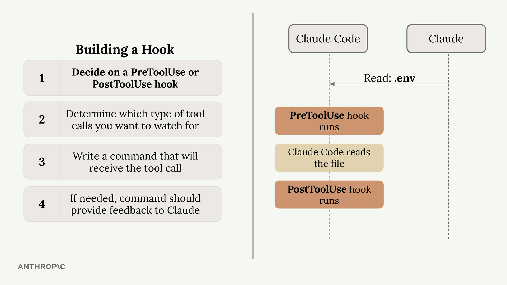
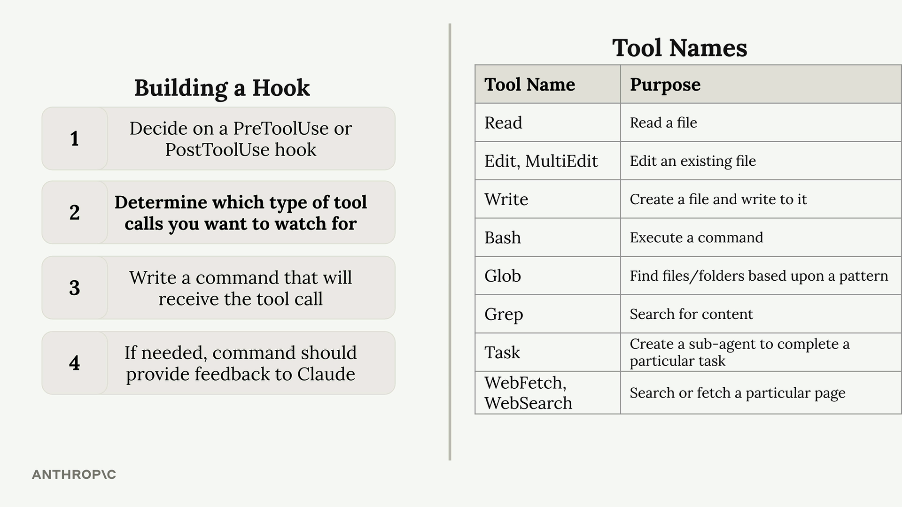
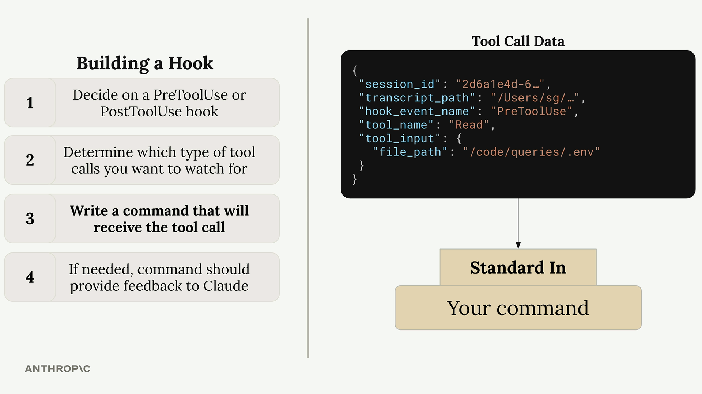
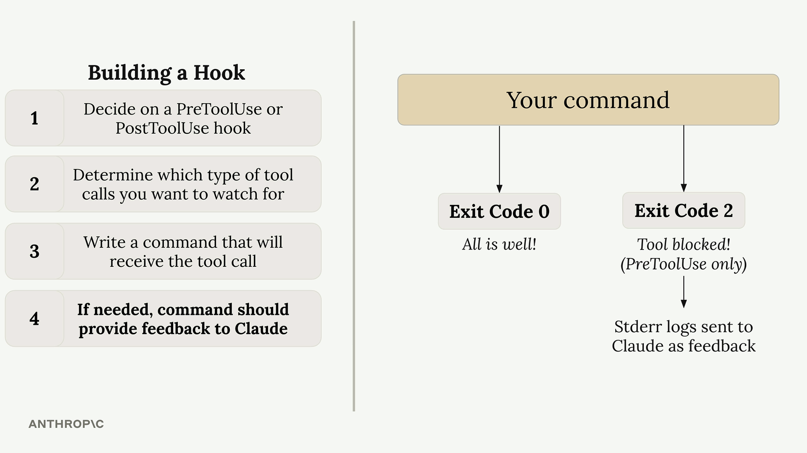

훅 정의하기
Claude Code의 훅은 도구 호출이 실행되기 전이나 후에 이를 가로채고 제어할 수 있게 해줍니다. 이를 통해 개발 환경에서 Claude가 할 수 있는 것과 할 수 없는 것을 세밀하게 제어할 수 있습니다.
훅 만들기
훅을 만드는 과정은 네 가지 주요 단계로 구성됩니다:

- PreToolUse 또는 PostToolUse 훅 결정 - PreToolUse 훅은 도구 호출이 실행되는 것을 막을 수 있고, PostToolUse 훅은 도구가 이미 사용된 후에 실행됩니다
- 감시할 도구 호출 유형 결정 - 어떤 도구가 훅을 트리거해야 하는지 정확히 지정해야 합니다
- 도구 호출을 수신할 명령어 작성 - 이 명령어는 표준 입력을 통해 제안된 도구 호출에 관한 JSON 데이터를 받습니다
- 필요한 경우 명령어가 Claude에 피드백 제공 - 명령어의 종료 코드가 Claude에게 작업을 허용할지 차단할지 알려줍니다
사용 가능한 도구
Claude Code는 훅으로 모니터링할 수 있는 여러 내장 도구를 제공합니다:

현재 설정에서 사용 가능한 도구를 정확히 확인하려면 Claude에게 직접 목록을 요청할 수 있습니다. 사용 가능한 도구는 사용자 정의 MCP 서버를 추가할 때 변경될 수 있으므로 이 방법이 특히 유용합니다.
도구 호출 데이터 구조
훅 명령어가 실행되면 Claude는 표준 입력을 통해 제안된 도구 호출에 대한 세부 정보를 담은 JSON 데이터를 전송합니다:

{
"session_id": "2d6a1e4d-6...",
"transcript_path": "/Users/sg/...",
"hook_event_name": "PreToolUse",
"tool_name": "Read",
"tool_input": {
"file_path": "/code/queries/.env"
}
}명령어는 표준 입력에서 이 JSON을 읽고 파싱한 다음, 도구 이름과 입력 매개변수를 기반으로 작업을 허용할지 차단할지 결정합니다.
종료 코드와 제어 흐름
훅 명령어는 종료 코드를 통해 Claude에 응답을 전달합니다:

- 종료 코드 0 - 모든 것이 정상이며 도구 호출을 계속 진행합니다
- 종료 코드 2 - 도구 호출을 차단합니다 (PreToolUse 훅에만 해당)
PreToolUse 훅에서 코드 2로 종료하면, 표준 오류에 작성한 오류 메시지가 Claude에 피드백으로 전송되어 작업이 차단된 이유를 설명합니다.
사용 사례 예시
일반적인 사용 사례는 Claude가 .env 파일과 같은 민감한 파일을 읽지 못하도록 막는 것입니다. Read와 Grep 도구 모두 파일 내용에 접근할 수 있으므로, 두 도구 유형 모두를 모니터링하여 제한된 파일 경로에 접근하려는지 확인해야 합니다.
이 방법을 사용하면 Claude의 파일 시스템 접근을 완전히 제어하는 동시에 특정 작업이 제한된 이유에 대한 명확한 피드백을 제공할 수 있습니다.